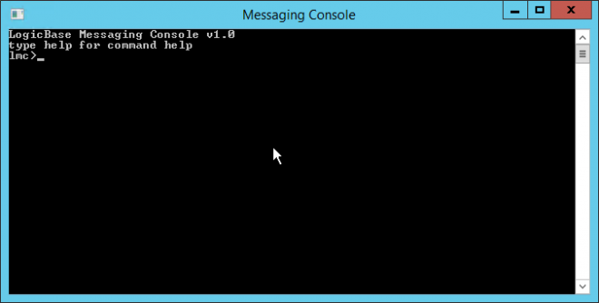

Table Of Contents
- Application Editor
- BusinessTimeSpan Editor
- Composer Theme Editor
- Credentials Manager
- License Status Manager
- LocalMachineInfo Editor
- Log Viewer
- Messaging Console
- Schedule Editor
- Screen Capture Util
- Server Extensions Configurator
- Task Tray Tool
- ToolPreferences Editor
- Workflow Explorer
Start > Programs > Symantec > Workflow Designer > Tools > Messaging Console
The Messaging Console is a command line tool for interacting with configured message exchanges. You can use the Messaging Console to view existing exchanges on local and remote computers. The Messaging Console lets you connect to a particular exchange to perform exchange operations. You can send and retrieve messages, list the exchange contents, query the contents, submit a log entry to the exchange, and more.
Chapter 37 - User Guide
Symantec Glossary
Messaging Console
A client tool for Workflow Solution that is used to connect to Workflow Exchange through a command line interface.https://www.symantec.com/security\_response/glossary/define.jsp?letter=m&word=messaging-console
File Location
"[Install Drive]:\Program Files\Symantec\Workflow\Tools\lmc.exe"
Screenshots

Help
help: prints off console help
usage:
lmc>help
lmc>help <command interested in>
open: Opens a queue for processing
usage:
lmc>open mylocalqueue
lmc>open lme://localhost/myremotequeue
lmc>open lme://127.0.0.1/myremotequeue
lmc>open lme://localhost:88888/myremotequeue
note:
'server' can be subsituted for for 'open'
count: counts all objects in queue
count
lmc>count
verbose: Turns on verbose messages. This is a toggle.
usage:
lmc>verbose
put: puts a string object into queue
usage:
lmc>put [-id <id>] [-quiet] -<type> <value> [-attribute:<type> <key>:<val
ue>]
[] optional
examples:
lmc>put -id 9 -string ronaldo -attibute:int age:30
lmc>put -string rafe -attibute:date birthdate:8/19/1984
lmc>put -id 10 -file c:\test\model.jpg
lmc>put 10 -file c:\test\model.jpg
lmc>put -string this is the string I am putting in.
switches:
-quiet (supresses messages)
-id <id> (allows you to specify an id when adding)
-<type> <value> (defines type and value of message payload)
-attribute:<type> (adds attribute to message)
avaible types :
string
decimal
int
long
bool
date
file
list: lists all objects in queeu
usage:
lmc>list [-id/-values] [-order <attributename> [-ordertype asc/dec]] [-a
ttributes]
lmc>list
switches:
-id (lists ids)
-value (list values)
-order (sorts list by an attribute)
-ordertype (specify how to sort either ascending or descending)
-attributes (shows objects attributes)
repeat: repeats last action, a number of times, records stats
Usage: (to repeat last command 500 times)
lmc>repeat 500
bye: closes down console
usage:
lmc>bye
get: gets and prints an object by its id from queue
usage:
lmc>get <id>
lmc>get 11112232112121
purge: removes all objects from a queue (asks for confirmation)
usage:
lmc>purge
remove: removes an object from the queue by id
usage:
lmc>remove <id>
lmc>remove 11112232112121
info: get info on queue
usage:
lmc>info
configinfo: list configs on all queues
usage:
lmc>configinfo
switches:
-all (gets all configurations (internal and external))
-server <remote server> (example lme://localhost)
exchangeinfo: get information about exchanges on a server
usage:
lmc>exchangeinfo
switches:
-count (gets count info)
-server <servername> (gets info for a remote server, ex: exchangeinfo lm
e://localhost )
-all (shows info on both external and internal)
pop: pop one or more objects
usage:
lmc>pop [-count <count>] [-id <id>] [-attributes]
examples:
lmc>pop
lmc>pop -id ff33
lmc>pop -count 4
lmc>pop -count 4 -attributes
switches:
-id (pop one object by id)
-count <count> (pop count objects)
-attributes (shows objects attributes)
query: defines a search criteria and shows the search results
usage:
lmc>query -<querytype>:<type> <attributename>:<value> -all/-any [-order <
attributename> [-ordertype asc/dec]] [-attributes]
[] optional
examples:
lmc>query -greaterthan:int age:20 -equals:string name:peter -all
lmc>query -greaterthan:int age:20 -equals:string name:peter -any -order a
ge
lmc>query -greaterthan:int age:20 -any -order name -ordertype dec
switches:
-all (search messages that meets all conditions)
-any (search messages that meets at least one condition)
-<querytype>:<type> (defines a searching condition)
-order <attributename> (orders the result by an attribute)
-ordertype (specify the ordertype ascending or descending)
-attributes (show attributes)
query types:
equals
equalswithoutcase
contains
containswithoutcase
doesnotequal
greaterthanorequalto
lessthanorequalto
greaterthan
lessthan
exists
doesnotexist
isnotnull
isnull
equalstootherfield
avaible types :
string
decimal
int
long
bool
date
file
log: logs an string
usage:
lmc>log -info/-debug/-warn/-fatal/-error <message>
examples:
lmc>log -info logging some info
lease: lease a message
usage:
lmc>lease -id <messageid>
examples:
lmc>lease -id 23
consume: consumes a message
usage:
lmc>consume -id <leaseid>
examples:
lmc>consume -id 102
release: releases the lease on a message
usage:
lmc>release -id <leaseid>
examples:
lmc>release -id 103
copyall: copys all messages from one exchange to another
usage:
lmc>copyall -from lme://localhost/test -to cache-test
switches:
-from <exchangename> (exchange name copy from)
-to <servername> (exchange name to copy to)
moveall: copys all messages from one exchange to another
usage:
lmc>copyall -from lme://localhost/test -to cache-test
switches:
-from <exchangename> (exchange name copy from)
-to <servername> (exchange name to copy to)
loaddll: load a dll
usage:
lmc>loaddll <filepath>
examples:
lmc>loaddll c:\MyImpFile.dll
avaible types :
string
decimal
int
long
bool
date
file